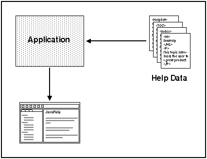
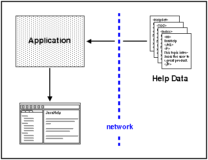
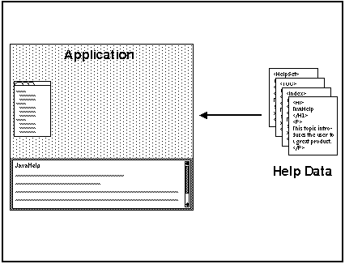
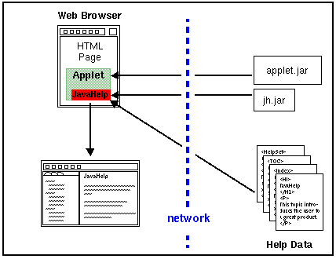

The JavaHelp system is designed to be deployed in a number of different types of applications and in a variety of different network environments. The following scenarios illustrate some of the different ways that the JavaHelp system can be used to present and deploy information.
A standalone Java application runs independently of a web browser. In this scenario the Java application runs locally and accesses help data installed on the same machine.

The application:
JavaHelp instance.The JavaHelp system enables an application to transparently load help data from networks (intranet and Internet). When the help data is accessed across a network, the scenario is essentially the same as in the standalone scenario - the location of the data is transparent to the application.

The application:
JavaHelp instanceBoth navigational and content information can be embedded directly in application windows. Embedding is accomplished by adding the JFC components that implement JavaHelp system components directly into the application frame.

In this illustration, the content viewer is embedded along the bottom of the application window, and the navigation viewer is embedded in a different portion of the window.
The application can directly control the contents of the content viewer by programmatic means. Likewise, JavaHelp system navigators can be used to control information displays other than the JavaHelp system content viewer.
Many modern applications are composed of a collection of interacting components. Examples range from large applications like Netscape NavigatorTM (with plugins), to applications where JavaBeans components are connected together using JavaScriptTM or Visual BasicTM.
In the case of JavaBeans, each component can be shipped with its own help data. The following illustrates such a case.
In this case, the help information from the red JavaBean (Bean1) and from the green JavaBean (Bean2) is merged in the help viewer table of contents. The merge operation can be performed by the developer ahead of time, or completed when the application or JavaBeans component is installed by the user.
In version 1 of the JavaHelp software, merging is accomplished by appending TOC and index information and searching merged full-text search databases.
In some environments, it is useful to separate the process that presents the help information from the application. For example:
In the following scenario, applications not written in the Java language make requests to a JavaHelp system process (help server) through an RPC mechanism (the RPC might be wrapped in a library and be invisible to the application developer).

Applications that run in browsers have a number of unique deployment issues that the JavaHelp system addresses. The following three scenarios illustrate how the JavaHelp system can be used in three of the most common cases. In the following scenarios an applet or some other triggering entity on an HTML page requests the JavaHelp system to display help information.
In the first scenario, the browser contains a customized implementation of
the JavaHelp system and an appropriate version of the JRE (Java Runtime Environment).
This JRE might have been delivered with the browser, or it might have been downloaded
by the client into the CLASSPATH. The implementation can use the
JavaHelp system content pane, or it can use the HTML viewer that is part of
the web browser.

In the second scenario, the JavaHelp system classes are downloaded along with
the applet. Because the JavaHelp system is an optional package of the Java release,
it is possible that a fully compliant JavaTM
2 SDK browser might not have the the JavaHelp system classes in its CLASSPATH.
In this case the JavaHelp system classes must be downloaded from the server.
Since the JavaHelp system is quite small, this approach is often practical.
Browsers might provide additional means for installing extensions downloaded
through this mechanism.

The third scenario describes the case in which the applet is downloaded to a browser environment that has neither the appropriate JRE nor the Javahelp system installed.
In this case, the JavaTM Plug-in can be used to download the required JRE and the JavaHelp system standard extension classes. The Java Plug-in allows developers to specify a specific JRE on the HTML page that is required to run their applet. If the correct JRE is not present on the user's system, the Java Plug-in software downloads the correct JRE and installs it on the user's system. The new JRE is subsequently available to any applet that requires it. Because the JavaHelp system is a standard extension to the Java platform, the JavaHelp system classes can be downloaded along with the JRE.

By combining the JavaHelp software API with new JavaHelp JSP tag libraries, web developers are now able to provide help for server-based applications that provide HTML pages to a browser. The diagram below illustrates the architecture.
 .
.
A browser initiates a JSP request. Examples of a JSP request are
displaying the help content in the helpset, the navigators, or the data for
a given navigator. Typically, the JSP request contains JavaBeansTM
components as well as JSP tag extensions. The JavaTM server turns
the request into a Java Servlet. The servlet access the appropriate information
from the helpset by using the classes in the JavaHelp library (jh.jar)
and the JavaHelp tag library (jhtags.jar) and returns HTML and possibly
JavaScript or dynamic HTML (DHTML) to the browser.
 Next Overview Topic:
Full-text Search
Next Overview Topic:
Full-text Search